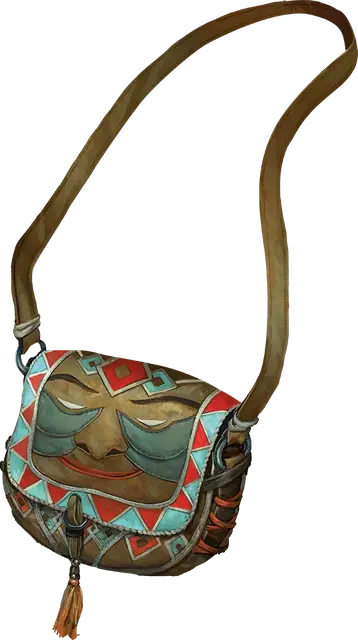

Сумка хранения
Bag of Holding
Чудесный предмет, необычный

Рекомендованная стоимость 101-500 зм
Эта сумка внутри гораздо больше, чем её внешние размеры, примерно 2 фута в диаметре у отверстия и 4 фута в глубину. Сумка может вместить до 500 фунтов, не превышающих в объёме 64 кубических фута. Сумка весит 15 фунтов, независимо от ее содержимого. Извлечение чего-либо из сумки совершается действием.
Если сумка перегружена, проткнута, или порвана, она рвётся окончательно, уничтожается, и её содержимое разбрасывается по Астральному Плану. Если сумка оказывается вывернутой наизнанку, то её содержимое вываливается наружу невредимым, но прежде, чем её можно будет снова использовать, сумку необходимо вывернуть обратно. Дышащие существа, помещенные внутрь мешка, способны оставаться в живых в течение времени, равного десяти минутам, поделённым на количество существ (минимум 1 минута), после чего они начинают задыхаться.
При помещении сумки хранения в межпространство, созданное с помощью удобного рюкзака Хеварда [heward’s handy haversack], переносной дыры [portable hole] или подобного предмета, оба предмета мгновенно уничтожаются и открываются врата, ведущие на Астральный План. Врата появляются в месте, где один предмет пытались поместить в другой. Все существа в пределах 10 футов от врат затягиваются внутрь и помещаются в случайным образом определённое место на Астральном Плане. После этого врата закрываются. Врата односторонние, и повторно не открываются.